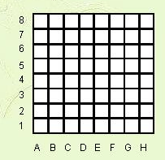
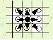
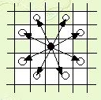

很久以前，亚瑟王和他的骑士习惯每年元旦去庆祝他们的友谊。为了纪念上述事件，我们把这些是看作是一个有一人玩的棋盘游戏。有一个国王和若干个骑士被放置在一个由许多方格组成的棋盘上，没有两个骑士在同一个方格内。
这个例子是标准的 $8*8$ 棋盘

国王可以移动到任何一个相邻的方格，从下图中黑子位置到下图中白子位置前提是他不掉出棋盘之外。

一个骑士可以从下图中黑子位置移动到下图中白子位置（走“日”字形） 但前提是他不掉出棋盘之外。

在游戏中，玩家可在每个方格上放不止一个棋子，假定方格足够大，任何棋子都不会阻碍到其他棋子正常行动。
玩家的任务就是把所有的棋子移动到同一个方格里——用最小的步数。为了完成这个任务，他必须按照上面所说的规则去移动棋子。另外，玩家可以选择一个骑士跟国王从他们两个相遇的那个点开始一起行动，这时他们按照骑士的行动规则行动，其他的单独骑士则自己一直走到集中点。骑士和国王一起走的时候，只算一个人走的步数。
写一个程序去计算他们集中在一起的最小步数，而且玩家必须自己找出这个集中点。当然，这些棋子可以在棋盘的任何地方集合。
 Comet OJ
Comet OJ